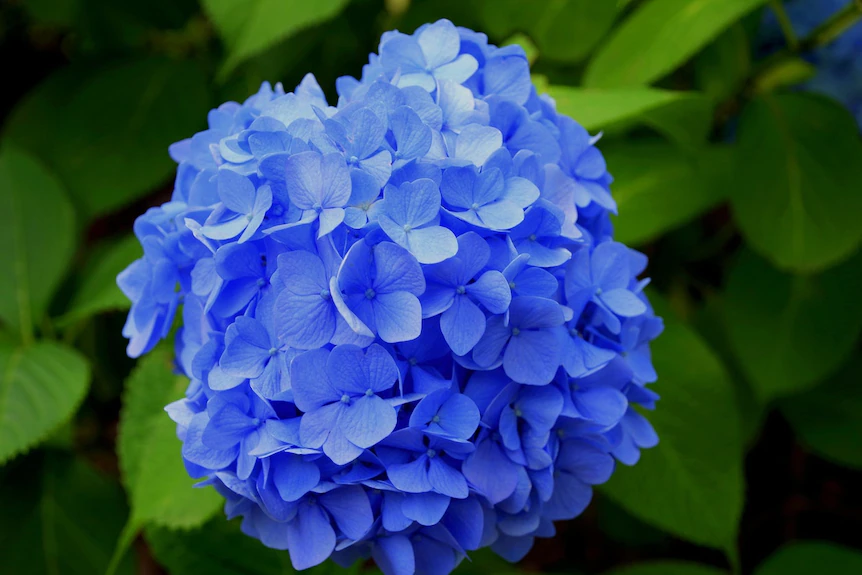

Blues are a color that's a bit challenging to come by in the gardening world. The two best
flowers for featuring true blues are Forget-me-nots and Himalayan Blue Poppy. Unfortunately,
Himalayan Blue Poppies are extremely difficult to grow and are pretty hard to come by. Luckily for us,
Forget-me-nots are much more forgiving, and they deliver a whole batch of pretty little blue flowers
from spring to summer. They'll do well in full sun or part shade, and should naturalize well in your
landscape.
Back to home page...

|

|
|

|